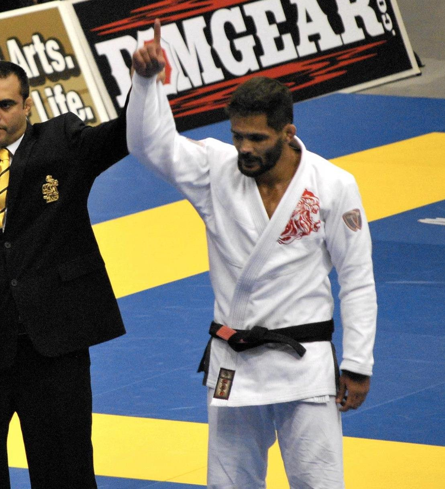
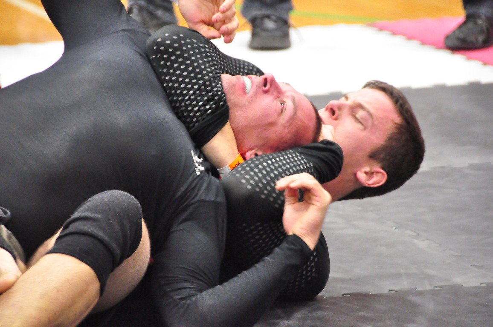
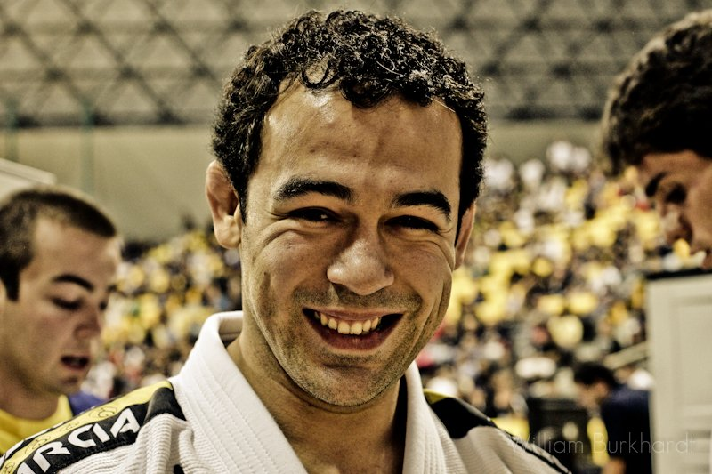
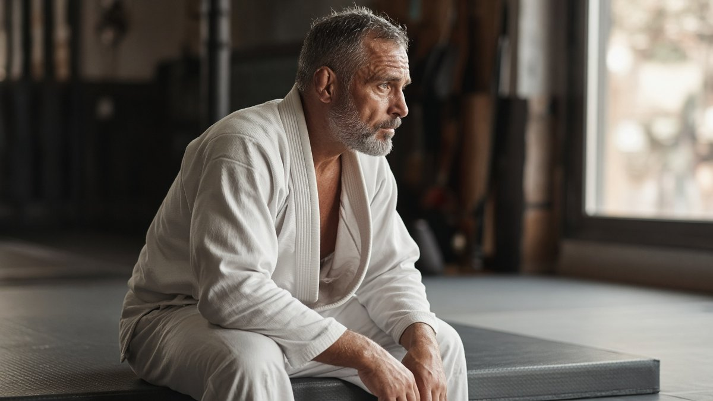
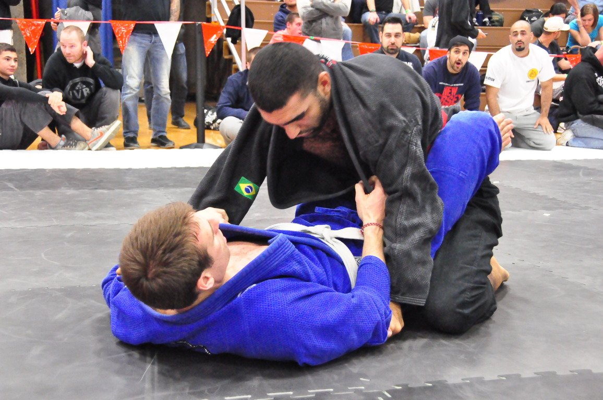
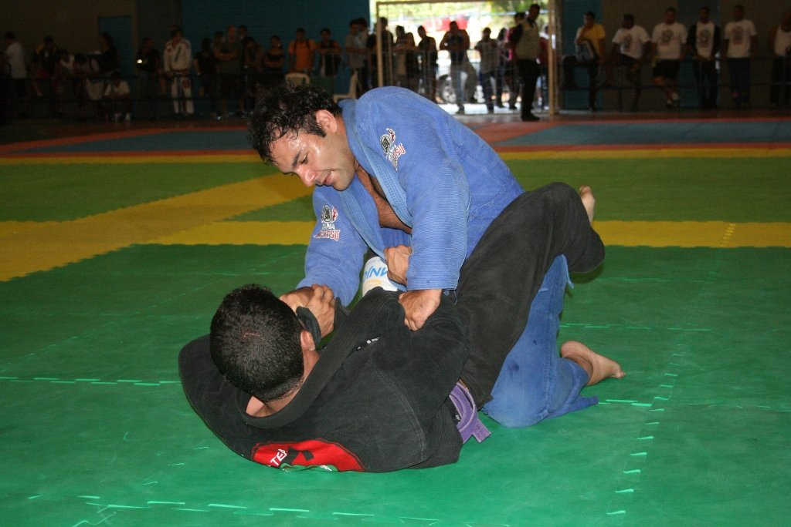

Fala, galera! Você já parou pra pensar que treinar jiu-jitsu é que nem montar um guarda-roupa sem olhar o manual? Você até consegue juntar umas peças, mas uma hora a porta não fecha e você não sabe por quê. Aí você volta, separa as peças, começa pela base, e de repente tudo encaixa.
A semana veio cheia desse tema. Teve lenda do esporte contando que levou um estrangulamento em 20 segundos na faixa azul, campeão mundial dizendo por onde começaria se fosse faixa branca de novo e o técnico mais famoso do grappling explicando por que não obriga ninguém a treinar duas vezes por dia. E pra quem gosta de competição, teve cinturão novo no UFC BJJ e o Craig Jones cutucando o sistema de pontos da IBJJF.
Como sempre, o Estagiário aqui separou o que importa e comentou do ponto de vista de quem treina por hobby, tem trabalho, família e dois ou três treinos na semana quando dá. Bora lá!
1. UFC BJJ 13: irmãos com cinturão e promessa de antidoping pra 2027

O que rolou: na quinta-feira, 29 de outubro, no Meta Apex, em Las Vegas, o UFC BJJ 13 definiu dois cinturões que estavam vagos. William Tackett finalizou Jay Rodriguez com um mata-leão em 1min26s e ficou com o título dos médios. Como o irmão dele, Andrew Tackett, já é o campeão dos meio-médios, os dois viraram os primeiros irmãos a segurar cinturões ao mesmo tempo no UFC BJJ. Na co-principal, Jalen Fonacier venceu o brasileiro Kleber Barboza por decisão unânime e levou o título dos galos, deixado pelo Mikey Musumeci. No mesmo card, Nicky Rodriguez finalizou Natã Tenca com um triângulo de mão. E na entrevista depois da luta, segundo o BJJDoc, o Nicky disse que o UFC BJJ deve começar a testar os atletas contra doping em 2027, e que a maior preocupação dele é com os jovens que acham que precisam de anabolizante pra ter sucesso. Fontes: UFC Brasil, ge e BJJDoc.
Dois irmãos campeões ao mesmo tempo é coisa rara em qualquer esporte. E repara num detalhe: irmão é o parceiro de treino que você não escolhe e que nunca te deixa ficar acomodado. Ninguém quer perder pro irmão. Pra quem treina por hobby, a lição é simples: ache aquele parceiro que te puxa pra cima. Não precisa ser parente, precisa ser alguém que aparece, que treina sério e que não deixa você enrolar no rola.
Agora, o papo do doping é o que mais interessa pra gente que treina de terça e quinta. Vamos combinar, né? Muita gente olha o físico dos profissionais e acha que o problema é falta de suplemento, quando na verdade é falta de sono, de alimentação e de constância. Na prática: se você tem filho no jiu-jitsu, ou se tem aquele colega novinho que só fala em "ficar grande", vale a conversa franca: o caminho é treino, comida, descanso e paciência. Atalho na seringa cobra caro depois, e não é na competição, é na saúde.
2. Marcelo Garcia: "peguei a faixa azul, perdi e dormi em 20 segundos"

O que rolou: no podcast The North South Project, Marcelo Garcia, multicampeão do ADCC e do Mundial e um dos maiores nomes da história do jiu-jitsu, contou como foi a primeira vez que competiu no Mundial, em 1998, no Rio de Janeiro, como faixa azul juvenil. Ele treinava numa cidade pequena, não tinha com quem se comparar e não sabia se o nível dele era bom. A resposta veio rápido: perdeu apagado num estrangulamento em uns 20 segundos e saiu achando que era o pior de todos. Sem um professor pra ajudar a digerir aquilo, ele se perguntou o que aconteceria se nunca mais ganhasse nada, e concluiu que, se continuasse treinando e um dia desse aula na cidade dele, já seria feliz. Ele diz que usou o mesmo raciocínio anos depois, quando enfrentou um câncer. Fonte: BJJDoc.
Cara, isso é PROFUNDO. O Marcelo Garcia, o cara que muita gente considera o melhor da história peso por peso, dormiu em 20 segundos na faixa azul. Então quando você toma um "passeio" de um faixa branca forte no treino de segunda, respira. Não é o fim da sua jornada, é só a régua mostrando onde você está. O problema nunca é perder. O problema é transformar a derrota em motivo pra parar.
E repara na resposta que ele encontrou: ele não decidiu "vou ser campeão mundial". Ele decidiu que treinar já era suficiente pra ser feliz. Tirou o peso do resultado e, justamente por isso, conseguiu continuar. Pra quem treina por hobby, isso vale ouro. Na prática: responda pra você mesmo, com honestidade: se você nunca ganhar uma medalha e nunca finalizar aquele parceiro casca-grossa, você continuaria treinando? Se a resposta for sim, você já ganhou a parte mais difícil. Se for não, talvez seja hora de rever por que você está no tatame.
3. John Danaher: "não escolho parceiro de treino pros meus atletas"

O que rolou: no podcast do Bernardo Faria, John Danaher explicou que não define quem treina com quem na equipe dele, nem obriga ninguém a aparecer em todo treino. Segundo ele, os atletas sabem a intensidade que querem e quando querem treinar. Ele está sempre lá, dá a aula e incentiva a treinar o máximo possível, mas não cobra presença. Danaher também disse que não existe fórmula única: tem atleta que rende bem treinando uma vez por semana e tem quem aguente três vezes por dia. E deu o exemplo do atleta que aos 19 anos treinava duas vezes por dia sem problema, mas que aos 33 não dá pra manter na mesma carga e na mesma intensidade. Fonte: BJJDoc.
Olha, se até o técnico mais metódico do grappling diz que a carga muda com a idade, por que a gente insiste em treinar aos 40 como treinava aos 20? Tem muito praticante hobbista que se cobra do mesmo jeito que se cobrava antes do trabalho, dos filhos e das costas reclamando. Aí força quatro treinos pesados na semana, se machuca e fica dois meses parado. No fim das contas, treinou menos do que se tivesse ido com calma.
Mas atenção: o recado do Danaher não é "treine quando der vontade". Os atletas dele são profissionais e ele está lá todo dia. A liberdade vem junto com responsabilidade. Pra gente, isso quer dizer escolher a intensidade com inteligência, não sumir do tatame. Na prática: nesta semana, antes de cada treino, dê uma nota de 1 a 5 pra como seu corpo está. Dia de nota 2, vá do mesmo jeito, mas faça o rola leve, trabalhe posição ou só drill. Constância com intensidade ajustada vale mais do que três semanas no limite e um mês no sofá.
4. Gui Mendes: se começasse de novo, focaria em fugas e guarda fechada

O que rolou: o campeão mundial Guilherme "Gui" Mendes, da AOJ, gravou um vídeo dizendo o que faria se começasse o jiu-jitsu de novo, como faixa branca. A primeira coisa seria organizar o aprendizado, porque, segundo ele, o principal motivo de as pessoas largarem o jiu-jitsu é ficarem sobrecarregadas no começo. A sugestão é ter uma missão por semana e saber o que priorizar. No conteúdo, o foco seria nas fugas (sair de cem quilos, da montada e das costas), já que o faixa branca passa a maior parte do tempo se defendendo, e na guarda fechada como primeiro ataque, uma posição onde dá pra prender o adversário, descansar e pensar no próximo passo. Ele compara com montar um quebra-cabeça: você começa pelas bordas. Fonte: BJJDoc.
Esse conselho é pra faixa branca, mas serve pra todo mundo que treina com pouco tempo. Pensa comigo: quem treina duas vezes por semana não tem tempo pra aprender trezentas posições. Se cada aula você tenta absorver uma técnica diferente, no fim do mês sobra quase nada. Já quem escolhe uma missão por semana sai do tatame sabendo exatamente o que treinou.
E a parte das fugas é o pulo do gato. Defesa boa é o que te dá mais tentativas: se você sabe sair da montada, aquele erro na guarda não vira finalização, vira só mais um minuto de luta. Na prática: escolha uma fuga pra esta semana, por exemplo a saída de cem quilos. Peça pro parceiro começar por cima em todo início de rola e anote no celular o que funcionou. Na semana seguinte, troque pela montada. Em um mês e pouco, você fecha as "bordas" do seu quebra-cabeça.
5. Craig Jones: o sistema de pontos da IBJJF premia o controle errado?

O que rolou: num instrucional sobre controle por cima, o australiano Craig Jones criticou o sistema de pontos da IBJJF. O argumento dele é que a pontuação foi pensada em cima de posições consideradas boas pro ground and pound (cem quilos, montada e costas), mas que essas posições raramente levam a finalizações no MMA moderno. Pra ele, a parte mais perigosa do adversário são as pernas: com os pés no chão, quem está por baixo consegue fazer ponte, fuga de quadril e explodir. Ele cita o Khabib Nurmagomedov, que quase não tenta passar a guarda e controla de dentro da meia-guarda, e defende que controle de verdade é quando o adversário não consegue se mexer sem entregar outra coisa, usando técnicas de controle das pernas vindas do wrestling. Fonte: BJJDoc.
Esse debate vai render nos comentários, mas tem uma coisa ali que vale pra todo mundo, competindo ou não. Quantas vezes você passou a guarda correndo, chegou no cem quilos e o parceiro escapou em dois segundos? Pois é. A gente aprende que passar a guarda é o objetivo, quando o objetivo real é controlar. Posição sem controle é só uma foto bonita.
Não precisa concordar com tudo que o Craig fala pra tirar proveito disso. Ele mesmo é polêmico por natureza. Na prática: no próximo treino, quando estiver por cima, faça um teste: antes de pensar em avançar, tente deixar o parceiro sem conseguir apoiar os pés no chão por dez segundos. Se ele ainda consegue fazer ponte e fugir de quadril, você não está controlando, está só em cima. Isso muda a forma como você enxerga a passagem de guarda.
De olho na agenda
- Hoje, 1º de novembro: finais do Europeu sem kimono da IBJJF, em Lido di Ostia, perto de Roma, com Pawel Jaworski, número 1 do ranking sem kimono, na final do absoluto. Fonte: Fabric Jiu-Jitsu.
- 8 de novembro: The Crown, o torneio de convidados da IBJJF, em Long Beach. Fonte: Fabric Jiu-Jitsu.
- 13 de novembro: ACBJJ 23, no Rio, com Galvão x Palhares no combat jiu-jitsu e Rodolfo Vieira x Kelvin Gastelum. Fonte: BJJDoc.
- 21 de novembro: Polaris 40, em Southampton, com Garry Tonon x Sam McNally pelo cinturão peso leve. Fonte: Polaris Pro Grappling.
Resumo da ópera
- Ache o parceiro que te puxa pra cima. E esqueça atalho: treino, comida, descanso e paciência.
- Até o Marcelo Garcia dormiu em 20 segundos na faixa azul. Perder faz parte, parar é que não pode.
- A carga de treino muda com a idade. Ajuste a intensidade, mas não suma do tatame.
- Uma missão por semana e prioridade nas fugas. Comece o quebra-cabeça pelas bordas.
- Por cima, controle antes de avançar. Posição sem controle é só uma foto bonita.
Se tiver aquele colega de treino que tomou um passeio no último campeonato e está pensando em largar, manda esse texto pra ele.
Consistência bate talento quando o talento não é consistente.
Nos vemos no tatame. Oss!
Receba o resumo da semana no seu e-mail
Quer receber conteúdo como esse direto no seu e-mail? Entra na newsletter. É pra quem treina de verdade, tem trabalho, família e quer evoluir no tatame sem enrolação. É de graça.